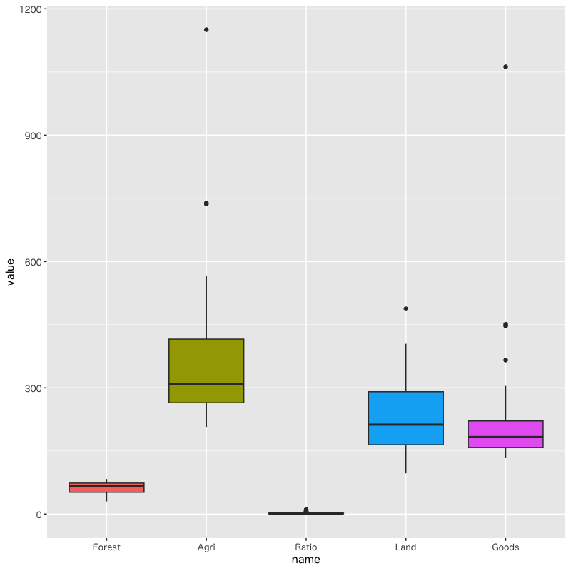
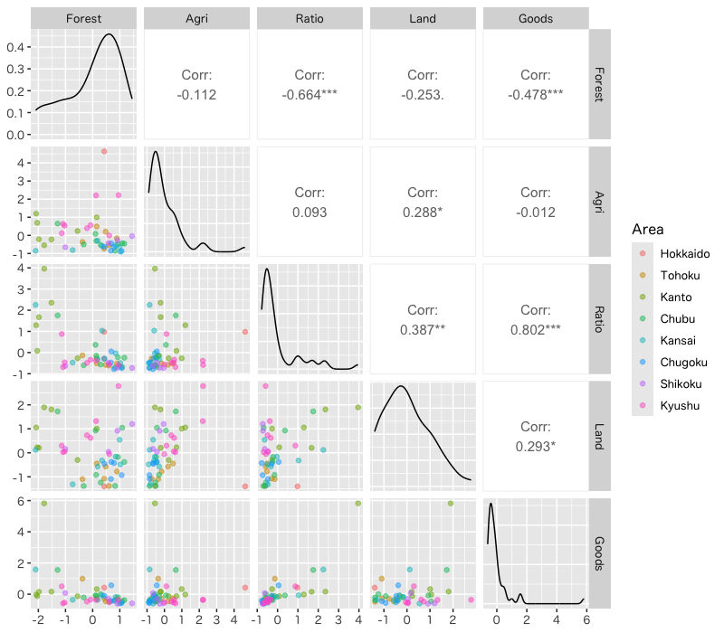
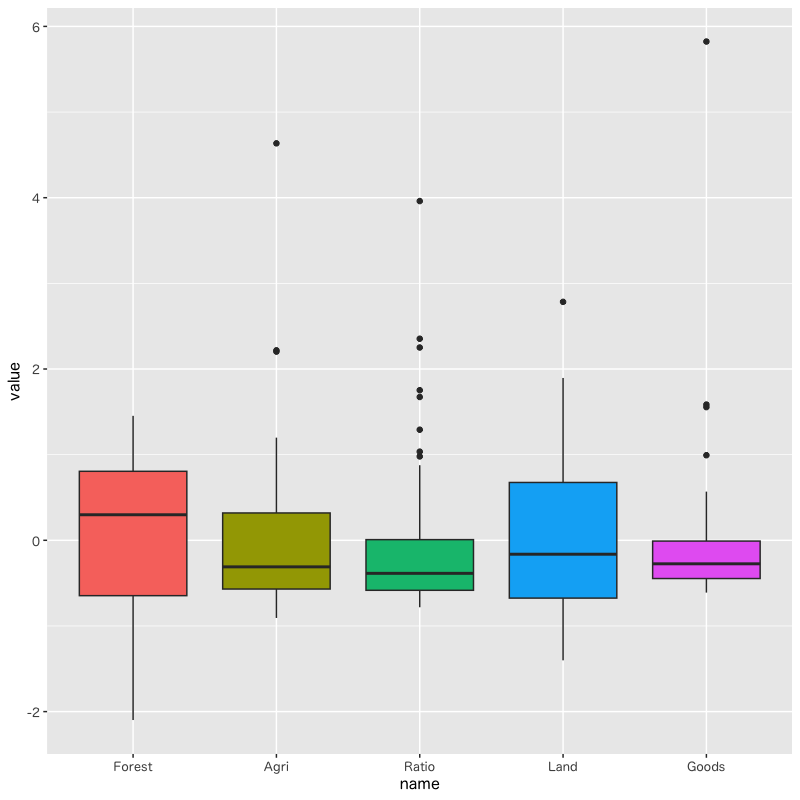
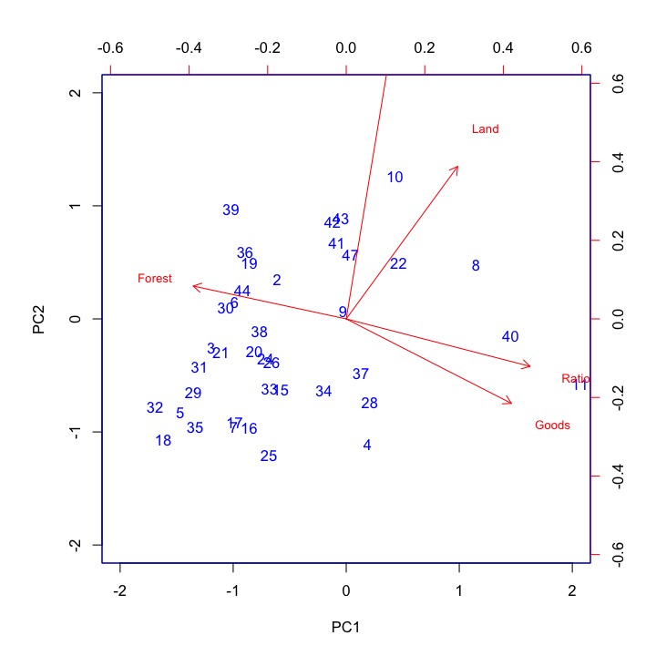
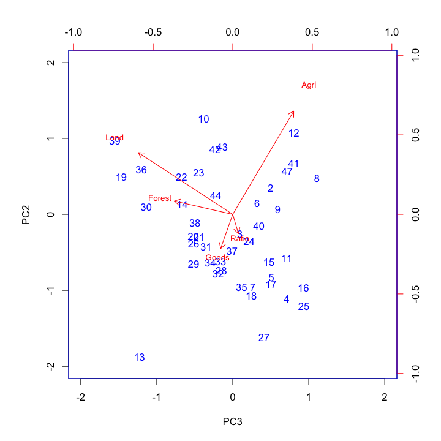

主成分分析
評価と視覚化
(Press ? for help, n and p for next and previous slide)
講義概要
- 第1日: 主成分分析の考え方
- 第2日: 分析の評価と視覚化
主成分分析の復習
主成分分析
- 多数の変量のもつ情報の分析・視覚化
- 変量を効率的に縮約して少数の特徴量を構成する
- 変量の間の関係を明らかにする
- 分析の方針
- データの情報を最大限保持する変量の線形結合を構成
- データの情報を最大限反映する座標(方向)を探索
- データの情報を保持する = データを区別することができる
分析の考え方
- 1変量の特徴量
\(\boldsymbol{a}^{\mathsf{T}}\boldsymbol{x}_1,\dotsc,\boldsymbol{a}^{\mathsf{T}}\boldsymbol{x}_n\)
を構成
- 観測データ \(\boldsymbol{x}_1,\dots,\boldsymbol{x}_n\) のもつ情報を最大限保持するベクトル \(\boldsymbol{a}\) を 適切に 選択
- \(\boldsymbol{a}^{\mathsf{T}}\boldsymbol{x}_1,\dotsc,\boldsymbol{a}^{\mathsf{T}}\boldsymbol{x}_n\) の変動 (ばらつき) が最も大きい方向を選択
最適化問題
制約条件 \(\|\boldsymbol{a}\|=1\) の下で以下の関数を最大化せよ
\begin{equation} f(\boldsymbol{a}) = \sum_{i=1}^n(\boldsymbol{a}^{\mathsf{T}}\boldsymbol{x}_i -\boldsymbol{a}^{\mathsf{T}}\bar{\boldsymbol{x}})^2, \quad \bar{\boldsymbol{x}} = \frac{1}{n}\sum_{i=1}^n\boldsymbol{x}_i \end{equation}
行列による表現
中心化したデータ行列
\begin{equation} X = \begin{pmatrix} \boldsymbol{x}_{1}^{\mathsf{T}}-\bar{\boldsymbol{x}}^{\mathsf{T}} \\ \vdots \\ \boldsymbol{x}_{n}^{\mathsf{T}}-\bar{\boldsymbol{x}}^{\mathsf{T}} \end{pmatrix} = \begin{pmatrix} x_{11}-\bar{x}_1 & \cdots & x_{1p}-\bar{x}_p\\ \vdots & & \vdots \\ x_{n1}-\bar{x}_1 & \cdots & x_{np}-\bar{x}_p \end{pmatrix} \end{equation}評価関数 \(f(\boldsymbol{a})\) は行列 \(X^{\mathsf{T}}X\) の二次形式
\begin{equation} f(\boldsymbol{a}) = \boldsymbol{a}^{\mathsf{T}}X^{\mathsf{T}}X\boldsymbol{a} \end{equation}
固有値問題
最適化問題
\begin{equation} \text{maximize}\quad f(\boldsymbol{a}) = \boldsymbol{a}^{\mathsf{T}}X^{\mathsf{T}}X\boldsymbol{a} \quad\text{s.t.}\quad \boldsymbol{a}^{\mathsf{T}}\boldsymbol{a}=1 \end{equation}解の条件
\(f(\boldsymbol{a})\) の極大値を与える \(\boldsymbol{a}\) は \(X^{\mathsf{T}}X\) の固有ベクトルである
\begin{equation} X^{\mathsf{T}}X\boldsymbol{a} = \lambda\boldsymbol{a} \end{equation}- 未定係数法を用いている
主成分負荷量と主成分得点
- \(\boldsymbol{a}\) : 主成分負荷量 (principal component loading)
- \(\boldsymbol{a}^{\mathsf{T}}\boldsymbol{x}_i\) : 主成分得点 (principal component score)
第1主成分負荷量
\(X^{\mathsf{T}}X\) の第1(最大)固有値 \(\lambda_1\) に対応する固有ベクトル \(\boldsymbol{a}_1\)
第\(k\)主成分負荷量
\(X^{\mathsf{T}}X\) の第 \(k\) 固有値 \(\lambda_k\) に対応する固有ベクトル \(\boldsymbol{a}_k\)
演習
問題
- 以下の問に答えなさい
ベクトル\(\boldsymbol{a}\) を \(X^{\mathsf{T}}X\) の単位固有ベクトルとするとき
\begin{equation} f(\boldsymbol{a})=\boldsymbol{a}^{\mathsf{T}}X^{\mathsf{T}}X\boldsymbol{a} \end{equation}の値を求めよ
行列\(X\)を中心化したデータ行列， ベクトル\(\boldsymbol{a}_{k}\)を第\(k\)主成分負荷量とするとき， 第\(k\)主成分得点の平均まわりの平方和
\begin{equation} \sum_{i=1}^n(\boldsymbol{a}_{k}^{\mathsf{T}}\boldsymbol{x}_i -\boldsymbol{a}_{k}^{\mathsf{T}}\bar{\boldsymbol{x}})^2 \end{equation}を \(X\)と\(\boldsymbol{a}_{k}\)で表せ
解答例
固有値・固有ベクトルの性質を利用する
\(X^{\mathsf{T}}X\)の 固有値・固有ベクトルを \(\lambda_{k}, \boldsymbol{a}_{k}\) とする． \(\boldsymbol{a}=\boldsymbol{a}_{k}\)とすれば
\begin{align} f(\boldsymbol{a}_{k}) &=\boldsymbol{a}_{k}^{\mathsf{T}}X^{\mathsf{T}}X\boldsymbol{a}_{k}\\ &=\boldsymbol{a}_{k}^{\mathsf{T}}\lambda_{k}\boldsymbol{a}_{k} &&\text{(固有ベクトル)}\\ &=\lambda_{k} &&\text{(単位ベクトル)} \end{align}
定義に従い計算すればよい(前回の復習)
\begin{align} f(\boldsymbol{a}_{k}) &= \sum_{i=1}^{n}(\boldsymbol{a}_{k}^{\mathsf{T}}\boldsymbol{x}_i -\boldsymbol{a}_{k}^{\mathsf{T}}\bar{\boldsymbol{x}})^2\\ &= \sum_{i=1}^{n} (X\boldsymbol{a}_{k})_{i}^{2}\\ &= \sum_{i=1}^{n} (X\boldsymbol{a}_{k})_{i} (X\boldsymbol{a}_{k})_{i}\\ &= (\boldsymbol{a}_{k}^{\mathsf{T}}X^{\mathsf{T}}) (X\boldsymbol{a}_{k}) = \boldsymbol{a}_{k}^{\mathsf{T}}X^{\mathsf{T}}X\boldsymbol{a}_{k} \end{align}
寄与率
寄与率の考え方
回帰分析で考察した寄与率の一般形
\begin{equation} \text{(寄与率)}= \frac{\text{(その方法で説明できる変動)}}{\text{(データ全体の変動)}} \end{equation}主成分分析での定義 (proportion of variance)
\begin{equation} \text{(寄与率)}= \frac{\text{(主成分の変動)}}{\text{(全体の変動)}} \end{equation}
Gram 行列のスペクトル分解
行列 \(X^{\mathsf{T}}X\) (非負定値対称行列) のスペクトル分解
\begin{equation} X^{\mathsf{T}}X =\sum_{k=1}^{p}\lambda_{k}\boldsymbol{a}_{k}\boldsymbol{a}_{k}^{\mathsf{T}} \end{equation}- 固有値と固有ベクトルによる行列の表現
主成分の変動の評価
\begin{equation} f(\boldsymbol{a}_{k}) = \boldsymbol{a}_{k}^{\mathsf{T}}X^{\mathsf{T}}X\boldsymbol{a}_{k} =\lambda_{k} \end{equation}- 固有ベクトル(単位ベクトル)の直交性を利用
寄与率の計算
主成分と全体の変動
\begin{align} \text{(主成分の変動)} &= \sum_{i=1}^{n}(\boldsymbol{a}_k^{\mathsf{T}}\boldsymbol{x}_i -\boldsymbol{a}_k^{\mathsf{T}}\bar{\boldsymbol{x}})^2 =\boldsymbol{a}_{k}^{\mathsf{T}}X^{\mathsf{T}}X\boldsymbol{a}_{k} =\lambda_k\\ \text{(全体の変動)} &= \sum_{i=1}^{n}\|\boldsymbol{x}_i-\bar{\boldsymbol{x}}\|^2 =\sum_{l=1}^p\boldsymbol{a}_{l}^{\mathsf{T}}X^{\mathsf{T}}X\boldsymbol{a}_{l} =\sum_{l=1}^p\lambda_l \end{align}固有値による寄与率の表現
\begin{equation} \text{(寄与率)} = \frac{\lambda_k}{\sum_{l=1}^p\lambda_l} \end{equation}
累積寄与率
累積寄与率 (cumulative proportion) :
第 \(k\) 主成分までの変動の累計
\begin{equation} \text{(累積寄与率)} = \frac{\sum_{l=1}^k\lambda_l}{\sum_{l=1}^p\lambda_l} \end{equation}- 累積寄与率はいくつの主成分を用いるべきかの基準
- 一般に累積寄与率が80%程度までの主成分を用いる
実習
R : 主成分分析の評価
分析結果の評価を行う関数:
base::summary(): 主成分負荷量や寄与率を表示ggfortify::autoplot(): 主成分得点の図示
#' データフレーム 'toy_data' を分析 toy_pca <- prcomp( ~ x1 + ... + xp, data = toy_data) #' 主成分負荷量と寄与率を確認する summary(toy_pca) #' 第1,2主成分得点を図示する library(ggfortify) autoplot(toy_pca)
データセットの準備
- 以下の2つのデータセットを使用する
japan_social.csv(先週から使用)総務省統計局より取得した都道府県別の社会生活統計指標の一部
MASS::UScereal
Nutritional and Marketing Information on US Cereals
The UScereal data frame has 65 rows and 11 columns. The data come from the 1993 ASA Statistical Graphics Exposition, and are taken from the mandatory F&DA food label. The data have been normalized here to a portion of one American cup.- 参考 : 詳細は ’?MASS::UScereal’ を参照
各変数の分布 (japan_social.csv)
変数間の散布図

Figure 1: データの散布図
変数のばらつきに大きな違いがある

Figure 2: 各変数の箱ひげ図
データの正規化
各変数の標本平均を0，不偏分散を1に規格化する

Figure 3: 正規化したデータの散布図
変数のばらつきをそろえる

Figure 4: 各変数の箱ひげ図
練習問題
それぞれのデータにおいて 正規化の有無の違いで寄与率・累積寄与率がどのように異なるか確認しなさい
prcomp(toy_data) # 正規化を行わない場合 prcomp(toy_data, scale. = TRUE) # 正規化を行う場合 ## 正式なオプション名は "scale." であるが，"sc=TRUE" などでも可japan_social.csvの読み込み方の例js_data <- read_csv("data/japan_social.csv")MASS::UScerealの整理の仕方の例## カテゴリカル変数が含まれるので以下のように処理すると良い str(MASS::UScereal) # 各変数の属性を確認する．factor/intが不要 uc_data <- MASS::UScereal |> select(where(is.double)) |> rownames_to_column(var = "product") |> as_tibble() # 行名を製品名を作成
演習
問題
- 以下の問に答えなさい
正規化条件を満たす線形変換 \(x'_{ij}=a_{j}(x_{ij}-b_{j})\) を求めよ
\begin{equation} \frac{1}{n}\sum_{i=1}^{n}x'_{ij}=0,\quad \frac{1}{n-1}\sum_{i=1}^{n}(x'_{ij})^{2}=1 \end{equation}正規化されたデータ行列を
\begin{equation} X' = \begin{pmatrix} {\boldsymbol{x}'_{1}}^{\mathsf{T}}\\ \vdots \\ {\boldsymbol{x}'_{n}}^{\mathsf{T}} \end{pmatrix} = \begin{pmatrix} x'_{11} & \cdots & x'_{1p}\\ \vdots & & \vdots \\ x'_{n1} & \cdots & x'_{np} \end{pmatrix} \end{equation}と書くとき， \(X'^{\mathsf{T}}X'\)の対角成分を求めよ
解答例
標本平均の定義どおりに計算すればよい
\begin{align} \frac{1}{n}\sum_{i=1}^{n}x'_{ij} &= \frac{1}{n}\sum_{i=1}^{n}\left(a_{j}(x_{ij}-b_{j})\right)\\ &= a_{j}\left(\frac{1}{n}\sum_{i=1}^{n}x_{ij}-b_{j}\right)\\ &=0 \end{align}したがって
\begin{equation} b_{j} = \frac{1}{n}\sum_{i=1}^{n}x_{ij} =\bar{x}_{j} \quad\text{(元の変数の標本平均)} \end{equation}
不偏分散も同様に計算すればよい
\begin{align} \frac{1}{n-1}\sum_{i=1}^{n}(x'_{ij})^{2} &= a_{j}^{2}\frac{1}{n-1}\sum_{i=1}^{n}(x_{ij}-\bar{x}_{j})^{2}\\ &=1 \end{align}したがって
\begin{equation} a_{j} = \left(\frac{1}{n-1}\sum_{i=1}^{n}(x_{ij}-\bar{x}_{j})^{2}\right)^{-1/2} \quad\text{(標準偏差の逆数)} \end{equation}
不偏分散での標準化であることに注意する
\begin{equation} (X'^{\mathsf{T}}X')_{jj} = \sum_{i=1}^{n}(x'_{ij})^{2} = n-1 \end{equation}
主成分負荷量
主成分負荷量と主成分得点
- 負荷量(得点係数)の大きさ: 変数の貢献度
- 問題点:
- 変数のスケールによって係数の大きさは変化する
- 変数の正規化(平均0，分散1)がいつも妥当とは限らない
- スケールによらない変数と主成分の関係:
相関係数 を考えればよい
相関係数
- \(\boldsymbol{e}_{j}\): 第 \(j\) 成分は1，それ以外は0のベクトル
- \(X\boldsymbol{e}_{j}\): 第 \(j\) 変数ベクトル
- \(X\boldsymbol{a}_{k}\): 第 \(k\) 主成分得点ベクトル
主成分と変数の相関係数:
\begin{align} \mathrm{Cor}(X\boldsymbol{a}_{k},X\boldsymbol{e}_{j}) % &=\frac{(X\boldsymbol{a}_{k})^{\mathsf{T}}X\boldsymbol{e}_{l}} % {\sqrt{(X\boldsymbol{a}_{k})^{\mathsf{T}}X\boldsymbol{a}_{k}} % \sqrt{(X\boldsymbol{e}_{l})^{\mathsf{T}}X\boldsymbol{e}_{l}}}\\ &=\frac{\boldsymbol{a}_{k}^{\mathsf{T}}X^{\mathsf{T}}X\boldsymbol{e}_{j}} {\sqrt{\boldsymbol{a}_{k}^{\mathsf{T}}X^{\mathsf{T}}X\boldsymbol{a}_{k}} \sqrt{\boldsymbol{e}_{j}^{\mathsf{T}}X^{\mathsf{T}}X\boldsymbol{e}_{j}}}\\ &=\frac{\lambda_{k}\boldsymbol{a}_{k}^{\mathsf{T}}\boldsymbol{e}_{j}} {\sqrt{\lambda_{k}}\sqrt{(X^{\mathsf{T}}X)_{jj}}} \end{align}
正規化データの場合
- \(X^{\mathsf{T}}X\) の対角成分は全て\(n-1\)
(\((X^{\mathsf{T}}X)_{jj}=n-1\))
第 \(k\) 主成分に対する相関係数ベクトル:
\begin{equation} \boldsymbol{r}_{k} =\sqrt{\lambda_{k}/(n-1)}\cdot\boldsymbol{a}_{k}, \quad (\boldsymbol{r}_{k})_{j} =\sqrt{\lambda_{k}/(n-1)}\cdot(\boldsymbol{a}_{k})_{j} \end{equation}- 主成分負荷量の比較
- 同じ主成分(\(k\)を固定)への各変数の影響は固有ベクトルの成分比
- 同じ変数(\(j\)を固定)の各主成分への影響は固有値の平方根で重みづけ
- 正規化されていない場合は変数の分散の影響を考慮
データ行列の分解表現
特異値分解
階数 \(r\) の \(n\times p\) 型行列 \(X\) の分解:
\begin{equation} X=U\Sigma V^{\mathsf{T}} \end{equation}- \(U\) は \(n\times n\) 型直交行列, \(V\) は \(p\times p\) 型直交行列
\(\Sigma\) は \(n\times p\) 型行列
\begin{equation} \Sigma = \begin{pmatrix} D & O_{r,p-r}\\ O_{n-r,r} & O_{n-r,m-r} \end{pmatrix} \end{equation}- \(O_{s,t}\) は \(s\times t\) 型零行列
- \(D\) は \(\sigma_{1}\geq\sigma_{2}\geq\sigma_{r}>0\) を対角成分とする \(r\times r\) 型対角行列
特異値
行列 \(\Sigma\) の成分表示
\begin{equation} \Sigma = \begin{pmatrix} \sigma_{1}&&&\\ &\ddots&&O_{r,p-r}\\ &&\sigma_{r}&\\ &&&\\ &O_{n-r,r} && O_{n-r,m-r} \end{pmatrix} \end{equation}- \(D\) の対角成分: \(X\) の 特異値 (singular value)
特異値分解によるGram行列の表現
Gram行列の展開:
\begin{align*} X^{\mathsf{T}}X &=(U\Sigma V^{\mathsf{T}})^{\mathsf{T}}(U\Sigma V^{\mathsf{T}})\\ &=V\Sigma^{\mathsf{T}}U^{\mathsf{T}}U\Sigma V^{\mathsf{T}}\\ &=V\Sigma^{\mathsf{T}}\Sigma V^{\mathsf{T}} \end{align*}
行列 \(\Sigma^{\mathsf{T}}\Sigma\) は対角行列
\begin{equation} \Sigma^{\mathsf{T}}\Sigma = \begin{pmatrix} \sigma_{1}^{2}&&&&&\\ &\ddots&&&&\\ &&\sigma_{r}^{2}&&&\\ &&&0&&\\ &&&&\ddots&\\ &&&&&0 \end{pmatrix} \end{equation}
演習
問題
- 行列\(X\)の特異値分解を\(U\Sigma V^{\mathsf{T}}\)とし，
行列\(U\)の第\(k\)列ベクトルを\(\boldsymbol{u}_{k}\)，
行列\(V\)の第\(k\)列ベクトルを\(\boldsymbol{v}_{k}\)
とするとき，
以下の問に答えなさい
- 行列\(U,V\)の列ベクトルを用いて\(X\)を展開しなさい
- Gram行列\(X^{\mathsf{T}}X\)の固有値を特異値で表しなさい
- 行列\(X\)の主成分負荷量を求めなさい
- それぞれの負荷量に対応する主成分得点を求めなさい
解答例
\(\Sigma\)が対角成分しか持たないことに注意すると 以下のように展開される
\begin{equation} X = U\Sigma V^{\mathsf{T}} = \sum_{k=1}^{r}\sigma_{k}\boldsymbol{u}_{k}\boldsymbol{v}_{k}^{\mathsf{T}} \end{equation}
先週の演習問題と特異値分解を比較する
\begin{equation} X^{\mathsf{T}}X = V\Sigma^{\mathsf{T}}\Sigma V^{\mathsf{T}} = A^{\mathsf{T}}\Lambda A \end{equation}より
\begin{equation} \lambda_{k} = \begin{cases} \sigma_{k}^{2},&k\leq r\\ 0,&k>r \end{cases} \end{equation}
転置に気をつけて同様に比較すればよい
\begin{equation} A = \begin{pmatrix} \boldsymbol{a}_{1}^{\mathsf{T}}\\ \vdots \\ \boldsymbol{a}_{p}^{\mathsf{T}} \end{pmatrix} \end{equation}と定義されているので 主成分負荷量(固有ベクトル)は行列 \(V\) の列ベクトル
\begin{equation} \boldsymbol{a}_{k}=\boldsymbol{v}_{k} \end{equation}
主成分得点の定義どおり計算する
\begin{equation} X\boldsymbol{a}_{k} =U\Sigma V^{\mathsf{T}}\boldsymbol{v}_{k} =\sigma_{k}\boldsymbol{u}_{k} \end{equation}- ただし\(k>r\)のとき\(\sigma_{k}=0\)とする
- \(V\)と\(U\)は大きさが異なるので注意する
バイプロット
特異値と固有値の関係
- 行列 \(V\) の第 \(k\) 列ベクトル \(\boldsymbol{v}_{k}\)
特異値の平方
\begin{equation} \lambda_{k} = \begin{cases} \sigma_{k}^{2},&k\leq r\\ 0,&k>r \end{cases} \end{equation}Gram行列の固有値問題
\begin{align} X^{\mathsf{T}}X\boldsymbol{v}_{k} &=V\Sigma^{\mathsf{T}}\Sigma V^{\mathsf{T}}\boldsymbol{v}_{k} =\lambda_{k}\boldsymbol{v}_{k} \end{align}- \(X^{\mathsf{T}}X\) の固有値は行列 \(X\) の特異値の平方
- 固有ベクトルは行列 \(V\) の列ベクトル \(\boldsymbol{a}_{k}=\boldsymbol{v}_{k}\)
データ行列の分解
- 行列 \(U\) の第 \(k\) 列ベクトル \(\boldsymbol{u}_{k}\)
- 行列 \(V\) の第 \(k\) 列ベクトル \(\boldsymbol{v}_{k}\)
データ行列の特異値分解: (\(\Sigma\) の非零値に注意)
\begin{equation} X = U\Sigma V^{\mathsf{T}} = \sum_{k=1}^{r}\sigma_{k}\boldsymbol{u}_{k}\boldsymbol{v}_{k}^{\mathsf{T}} \end{equation}
データ行列の近似表現
第 \(k\) 主成分と第 \(l\) 主成分を用いた行列 \(X\) の近似 \(X'\)
\begin{equation} X\simeq X' =\sigma_{k}\boldsymbol{u}_{k}\boldsymbol{v}_{k}^{\mathsf{T}} +\sigma_{l}\boldsymbol{u}_{l}\boldsymbol{v}_{l}^{\mathsf{T}} \end{equation}行列の積による表現
\begin{align} X'=&GH^{\mathsf{T}}, (0\leq s\leq1)\\ &G= \begin{pmatrix} \sigma_{k}^{1-s}\boldsymbol{u}_{k}& \sigma_{l}^{1-s}\boldsymbol{u}_{l} \end{pmatrix},\quad H= \begin{pmatrix} \sigma_{k}^{s}\boldsymbol{v}_{k}& \sigma_{l}^{s}\boldsymbol{v}_{l} \end{pmatrix} \end{align}
バイプロット
- 関連がある2枚の散布図を1つの画面に表示する散布図を一般に バイプロット (biplot) と呼ぶ
行列\(G,H\)の各行を2次元座標と見なす
\begin{equation} X'=GH^{\mathsf{T}} \end{equation}- 行列 \(G\) の各行は各データの2次元座標
- 行列 \(H\) の各行は各変量の2次元座標
- パラメタ \(s\) は \(0\), \(1\) または \(1/2\) が主に用いられる
- \(X\) の変動を最大限保持する近似は \(k=1,l=2\)
実習
R : 関数 biplot() の使い方
- Rの標準関数:
biplot() 主成分分析の結果に対して表示:
## データフレームを分析 est <- prcomp( ~ x1の変数名 + ... + xpの変数名, data = データフレーム) ## 第1と第2主成分を利用した散布図 biplot(est) ## 第2と第3主成分を利用した散布図 biplot(est, choices = c(2,3)) ## パラメタ s を変更 (既定値は1) biplot(est, scale=0)
練習問題
- それぞれのデータの主成分分析の結果を利用してバイプロットによる可視化を行いなさい
- 正規化したデータでの主成分分析を行いなさい
- 第1主成分と第2主成分でのバイプロットを描きなさい
第2主成分と第3主成分でのバイプロットを描きなさい
biplot(prcompの結果, choices=c(x軸成分,y軸成分)) # 主成分の指定
解析の事例
バイプロット
主成分負荷量
colMeans(x, na.rm = TRUE) でエラー: 'x' は数値でなければなりません PC1 PC2 PC3 PC4 PC5 Forest -0.4871498 0.1045813 -0.45748795 0.6859649 -0.26815060 Agri 0.1339190 0.8115056 0.47912767 0.3045447 0.03483694 Ratio 0.5851294 -0.1511042 0.04467249 0.1640953 -0.77837539 Land 0.3547649 0.4851374 -0.74167904 -0.2897485 0.06885892 Goods 0.5258481 -0.2689436 -0.09517368 0.5708093 0.56238052
寄与率
Importance of components: PC1 PC2 PC3 PC4 PC5 Standard deviation 1.5904 1.0699 0.8196 0.7076 0.39190 Proportion of Variance 0.5059 0.2289 0.1343 0.1001 0.03072 Cumulative Proportion 0.5059 0.7348 0.8691 0.9693 1.00000
第1,2主成分によるバイプロット
Figure 5: 主成分分析のバイプロット(第1,2)
第3,2主成分によるバイプロット
Figure 6: 主成分分析のバイプロット(第3,2)
中心部の拡大 (第1,2主成分)

Figure 7: 主成分分析のバイプロット(第1,2)
中心部の拡大 (第3,2主成分)

Figure 8: 主成分分析のバイプロット(第3,2)
次回の予定
- 第1日 : 判別分析の考え方
- 第2日 : 分析の評価